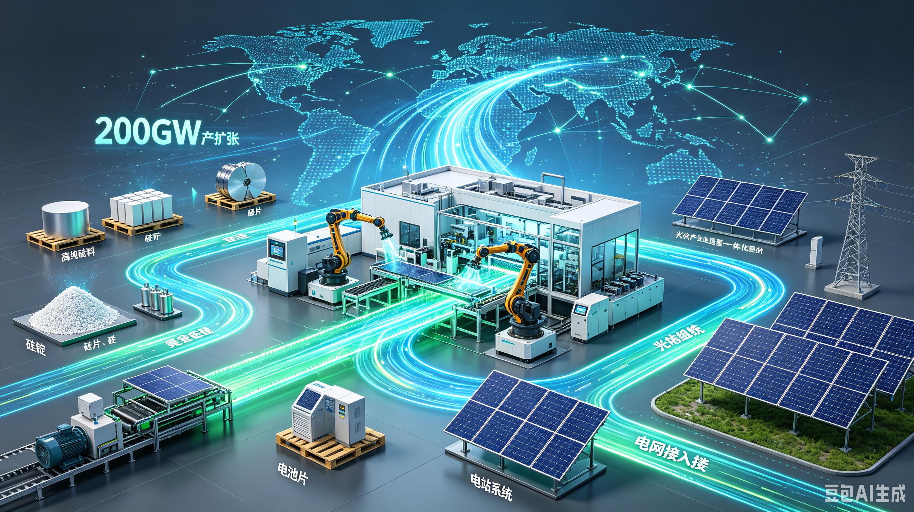

Energy Assets
Develop renewable generation, storage and site-level energy capabilities that can support reliable infrastructure operations.
RENEWABLE ENERGY × DIGITAL INFRASTRUCTURE
TerraHash Energy is developing an integrated model that connects renewable generation, energy storage, high-performance computing, operational data and responsible digital innovation.
DEVELOPMENT MODEL
Our roadmap follows a practical infrastructure model: establish the physical foundation, add data and operating capabilities, then scale through strategic partnerships and carefully governed digital services.

Develop renewable generation, storage and site-level energy capabilities that can support reliable infrastructure operations.
Connect power availability with high-performance computing and energy-efficient digital infrastructure.
Build a common data layer for generation, utilization, equipment health, reporting and project visibility.
Work with project developers, technology partners, angel investors, strategic capital and infrastructure-focused investors.
Expand selectively across markets where renewable resources, infrastructure demand and regulatory conditions support the model.
STRATEGIC SYNERGY
The long-term opportunity is not a single product. It is the combination of physical energy assets, digital infrastructure, trusted data and strategic capital relationships.
WHAT WE DO
Digital infrastructure designed around renewable power availability, energy efficiency and transparent operating metrics.
Explore →Integrate generation, storage, grid interfaces and high-performance computing into a coherent operating environment.
Explore →Use operational and market data to improve visibility, utilization and decision-making across energy assets.
Explore →Build relationships with investors, developers, technology providers and infrastructure operators to scale projects.
Explore →PLATFORM
We are designing a data layer that connects renewable assets, operational metrics and digital records. The objective is to make infrastructure performance easier to monitor, verify and communicate.
MARKET INTELLIGENCE
A research layer covering digital asset markets and their relationship to energy, infrastructure and capital conditions.
GLOBAL VISION
TerraHash Energy's development strategy is designed around the same principle used by successful infrastructure businesses: establish operational capability first, create repeatable systems second, and use strategic partnerships to accelerate expansion.
Learn About UsBUILD WITH TERRAHASH
Talk with TerraHash Energy about infrastructure, technology, strategic capital or project collaboration.
Start a Conversation